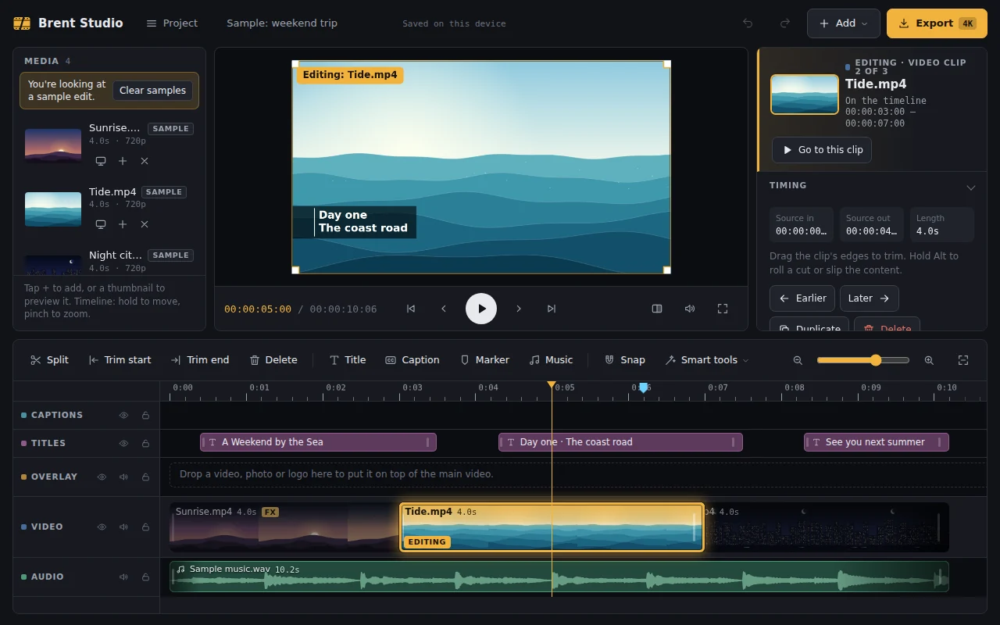
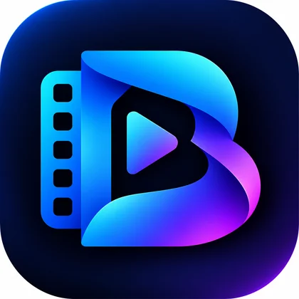

Precision editing
Trim, split, rearrange and speed-ramp clips on a timeline designed for your workflow.
Big-screen creative power, wherever inspiration strikes. Cut videos, build motion titles, craft cinematic looks and make stories worth sharing — all in Brent Studio.

Brent Studio brings editing essentials and expressive creative tools together in one workspace.
Trim, split, rearrange and speed-ramp clips on a timeline designed for your workflow.
Give every intro, vlog or lyric video a distinct look with titles, captions and text animations.
Generate captions, synthetic voice-over and background cutouts without uploading your footage to the developer.
Build up stories with photo collage, picture-in-picture, masks, blending and animated backgrounds.
Add music, record narration, cut to the beat and mix audio layers on supported plans.
Produce widescreen, vertical, square and social-ready video with flexible export choices.
Explore the editor, title effects and mobile workflow using the application screenshots you provided.
Arrange footage, split clips, trim to the moment, add music and keep every detail under control.
Learn how it works ↗Get started quickly, then take your edit as far as your imagination goes.
Add videos, photos or music from your device and let the timeline take shape.
Cut, add overlays, adjust timing and layer titles, narration and motion.
Choose the video shape and export resolution that suits where your story is headed.
Everything you need to start editing, with more power and creative freedom available when you need it.
Essential video-editing tools for memorable edits.
Advanced editing and higher-quality exports.
Pro purchase options and prices are shown in the application. Performance depends on your device; see the full Free vs Pro comparison.
Media editing takes place on your device. Brent Studio does not receive your imported videos or photos. Optional project syncing uses your own Google Drive; original media sync is optional per project. See our Privacy Policy.
Yes. Signing in with Google is optional. It enables account-based Pro access and project syncing across supported devices.
Yes. The free plan supports 720p and 1080p exports with a small Brent Studio watermark. Pro adds higher export options including up to 4K on capable devices.
Yes. The guide covers Android phones and tablets, plus desktop-oriented and Windows workflows. Large projects and advanced AI features depend on your device's processing power.
Visit the User Guide for a complete walkthrough, troubleshooting tips and desktop keyboard shortcuts.

Learn the tools, explore the possibilities, and bring your next edit to life.
Get started with Brent Studio ↗